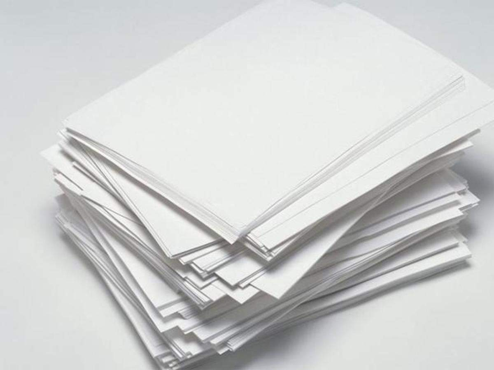
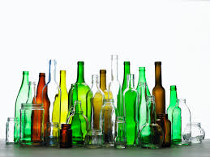

Check Recyclability of Popular Items
Plastic

Electronics

Paper

Glass
Using AI to help you recycle efficiently and responsibly.
AI analysis result will appear here after image upload.
Plastic
Electronics
Paper
Glass